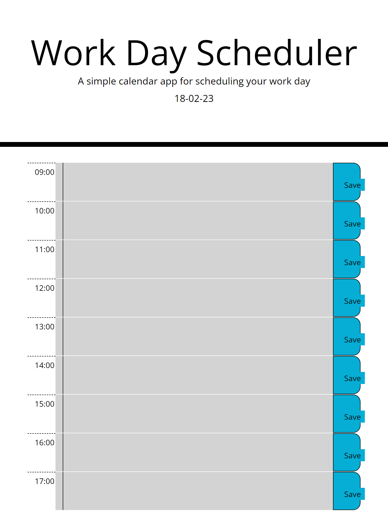

Hi , I am Adam an aspiring Junior Developer
I have been interested in becoming a Front end developer for the last 2 years, firstly trying the self taught route currently more than half way through a boot camp. I love building things on the web and seeing it happen in real time, i have always been a problem solver and since finding developing i get to practice it everyday.
iRecipe
iRecipe is a recipe and cocktail recipe generator, that allows user to search for a recipe by inputting a meal or ingredient. This project was my first time collaborating with other developers so i learnt a lot. I was tasked with writing the functionality in javascript using 2 third party apis. I also implemented a like button feature that saves its state even on refresh using local storage. The technology used in this webpage is as follows. Bootstrap, CSS , javascript, Git.
5 Day Work Planner
This work day planner was an assignment given to me by my boot camp, with the criteria of using bootstrap, moment js and local storage. The user wanted a planner based on a 8 hour work day that is color coordinated based on past , present and future. With the capability of entering text into different hour slots with the ability to save even on refresh. During this assignment i learnt a lot about local storage and receiving saved information on page load as well as using if statements to test specific conditions. Created using Bootstrap, CSS and javascript.